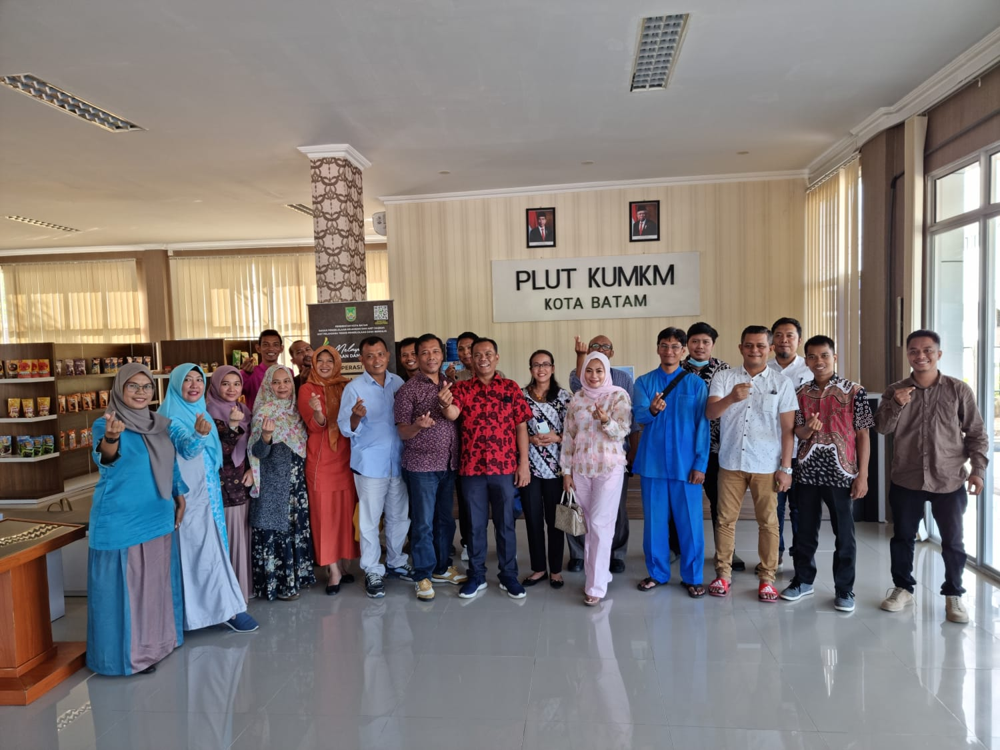

Berita

Ketua Dekopin Batam Fandy iood Siregar ,ST.M.PWK beserta
rombongan melakukan audensi kepada Ketua Dekopin pusat Dr
Nurdin Halid di jakarta dikantor Wisma NH, dalam kesempatan
tersebut ketua Dekopin Batam menyampaikan kegiatan Expo
Produk Koperasi tahun 2023 yang akan dilaksanakan Dekopin
Batam bersama Angkasa Malaysia (Angkatan Koperasi Kebangsaan
Malaysia) Berhad dan Suruhanjaya Koperasi Malaysia (SKM).
Dalam audensi tersebut Fandy menyampaikan dihadapan ketua umum Dr Nurdin Halid dan Wakil Ketua umum Ramli Raliansen Saragih bahwa Expo Produk Koperasi antara negara Indonesia dan Malaysia akan dilaksanakan di Nagoya Hill Mall pada Jumat-Minggu, 23-25 Juni 2023.
Kerjasama Expo Produk Koperasi yang di inisiasi oleh Dekopin Batam dan Angkasa serta SKM Malaysia merupakan kerjasama awal dalam meningkat kan produk produk berkualitas export, maka dalam acara Expo tersebut Dekopin Batam dan Angkasa Malaysia akan menandatangani ejnan MOU. Lihat selengkapnya
Dalam audensi tersebut Fandy menyampaikan dihadapan ketua umum Dr Nurdin Halid dan Wakil Ketua umum Ramli Raliansen Saragih bahwa Expo Produk Koperasi antara negara Indonesia dan Malaysia akan dilaksanakan di Nagoya Hill Mall pada Jumat-Minggu, 23-25 Juni 2023.
Kerjasama Expo Produk Koperasi yang di inisiasi oleh Dekopin Batam dan Angkasa serta SKM Malaysia merupakan kerjasama awal dalam meningkat kan produk produk berkualitas export, maka dalam acara Expo tersebut Dekopin Batam dan Angkasa Malaysia akan menandatangani ejnan MOU. Lihat selengkapnya

Expo produk koperasi Dekopin Batam (Dewan Koperasi Daerah
Kota Batam) dan Angkasa Malaysia & SKM (Angkatan Koperasi
Kebangsaan Malaysia & suruhanjaya koperasi Malaysia) yang
akan dilaksanakan di Nagoya Hill mall Jumat 23-25 Juni 2023.
Ketua Dekopin Batam Fandy iood Siregar menyampaikan hasil pertemuan dengan pihak Telkomsel di Jakarta bersama GM Small Medium Enterprise Telkomsel Nyoman Adiyasa menyepakati dalam Expo Produk Koperasi ini akan bekerjasama dalam meluncurkan program applikasi telkomsel dalam digitalisasi koperasi. fandy iood siregar menyampaikan hasil pertemuan tersebut bahwa Telkomsel akan memberikan kemudahan kepada 10 Koperasi di kota batam sesuai rekomendasi Dekopim Batam untuk mendapatkan Koperasi Digital Telkomsel.
Adapun kelebihan applikasi koperasi digital telkomsel ini antara lain applikasi tersebiu akan langsun di install di play store atas nama Koperasi binaan dekopin dan Telkomsel. Menurut Fandy iood siregar fitur fitur dalam applikasi koperasi digital telkomsel antara lain : sistem E commerce, managemen allowance, dashboard reporting, support system hirarki sesuai logo koperasi masing masing, smart cashier-POS, system produk digital, system inventory support multi level, dan banyak lagi keunggulannya. Lihat selengkapnya
Ketua Dekopin Batam Fandy iood Siregar menyampaikan hasil pertemuan dengan pihak Telkomsel di Jakarta bersama GM Small Medium Enterprise Telkomsel Nyoman Adiyasa menyepakati dalam Expo Produk Koperasi ini akan bekerjasama dalam meluncurkan program applikasi telkomsel dalam digitalisasi koperasi. fandy iood siregar menyampaikan hasil pertemuan tersebut bahwa Telkomsel akan memberikan kemudahan kepada 10 Koperasi di kota batam sesuai rekomendasi Dekopim Batam untuk mendapatkan Koperasi Digital Telkomsel.
Adapun kelebihan applikasi koperasi digital telkomsel ini antara lain applikasi tersebiu akan langsun di install di play store atas nama Koperasi binaan dekopin dan Telkomsel. Menurut Fandy iood siregar fitur fitur dalam applikasi koperasi digital telkomsel antara lain : sistem E commerce, managemen allowance, dashboard reporting, support system hirarki sesuai logo koperasi masing masing, smart cashier-POS, system produk digital, system inventory support multi level, dan banyak lagi keunggulannya. Lihat selengkapnya

Koperasi Kota Batam siap menerima aplikasi koperasi digital
Telkomsel pada hari Jumat, 23 Juni 2023 di Nagoya Hill Mall.
Lihat selengkapnya

Koordinasi dan informasi terkait seleksi untuk pengajuan
Aplikasi Koperasi Digital Telkomsel
Hari/Tanggal : Jumat, 16 Juni 2023
Pukul : 13.30 - 16.00
Tempat : Gedung UPTD PLUT KUMKM, Batam- Bengkong
Lihat selengkapnya
Hari/Tanggal : Jumat, 16 Juni 2023
Pukul : 13.30 - 16.00
Tempat : Gedung UPTD PLUT KUMKM, Batam- Bengkong
Lihat selengkapnya

AYOO GOLF BARENG
Dalam rangka memeriahkan "EXPO PRODUK KOPERASI" Dekopin Batam - Angkasa Malaysia - SKM Malaysia bersama
Fandy Iood Siregar.ST.M.PWK - Ketua Dekopin Batam
Datuk Seri Dr. Abdul Fattah Haji Abdullah - Presiden Angkasa Malaysia
Ansar Ahmad S.E., M.M - Gubernur Kepulauan Riau
En. Amran bin Abd Kadir - Naib Pengerusi Eksekutif Angkasa Malaysia
Join Us :
Hari dan Tanggal : Jumat, 23 Juni 2023
Pukul : 07.00 - 12.00 WIB
Tempat : Palm Springs - Batam
Contact Person :
Riana Safitri 0822-7000-8000
Lihat selengkapnya
Dalam rangka memeriahkan "EXPO PRODUK KOPERASI" Dekopin Batam - Angkasa Malaysia - SKM Malaysia bersama
Fandy Iood Siregar.ST.M.PWK - Ketua Dekopin Batam
Datuk Seri Dr. Abdul Fattah Haji Abdullah - Presiden Angkasa Malaysia
Ansar Ahmad S.E., M.M - Gubernur Kepulauan Riau
En. Amran bin Abd Kadir - Naib Pengerusi Eksekutif Angkasa Malaysia
Join Us :
Hari dan Tanggal : Jumat, 23 Juni 2023
Pukul : 07.00 - 12.00 WIB
Tempat : Palm Springs - Batam
Contact Person :
Riana Safitri 0822-7000-8000
Lihat selengkapnya

Technical Meeting Karnival Produk Koperasi Angkasa Malaysia dan
Dekopinda Batam
Tanggal : 23-25 Juni 2023
Tempat : Nagoya Hill Batam, Kepri, Indonesia
Lihat selengkapnya
Tanggal : 23-25 Juni 2023
Tempat : Nagoya Hill Batam, Kepri, Indonesia
Lihat selengkapnya

AYO IKUTI!!!
LOMBA MEWARNAI EXPO Produk Koperasi Indonesia - Malaysia 2023
Tanggal : 24 Juni 2023
Jam : 10.00 - 15.00 WIB
Tempat : Atrium Nagoya Hill Batam
Informasi Pendaftaran:
Hiron Andika : 0852 7211 4070
Wiwik : 0812 6815 4209
Eka : 0811 777 8757
Lihat selengkapnya
LOMBA MEWARNAI EXPO Produk Koperasi Indonesia - Malaysia 2023
Tanggal : 24 Juni 2023
Jam : 10.00 - 15.00 WIB
Tempat : Atrium Nagoya Hill Batam
Informasi Pendaftaran:
Hiron Andika : 0852 7211 4070
Wiwik : 0812 6815 4209
Eka : 0811 777 8757
Lihat selengkapnya
Main Booth

Suruhanjaya Koperasi Malaysia

Angkatan Koperasi Kebangsaan Malaysia Berhad

Dewan Koperasi Indonesia

Rumah BUMN